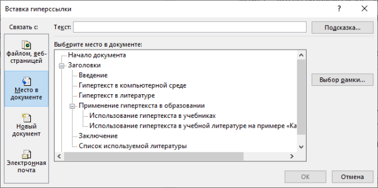
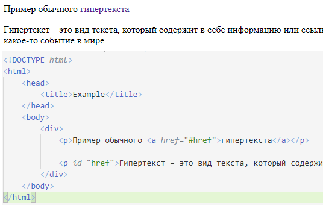
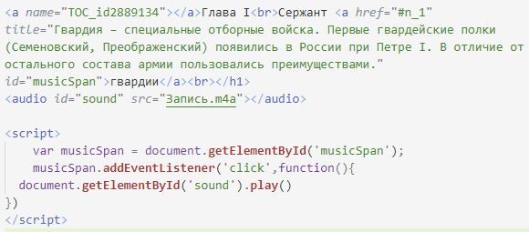
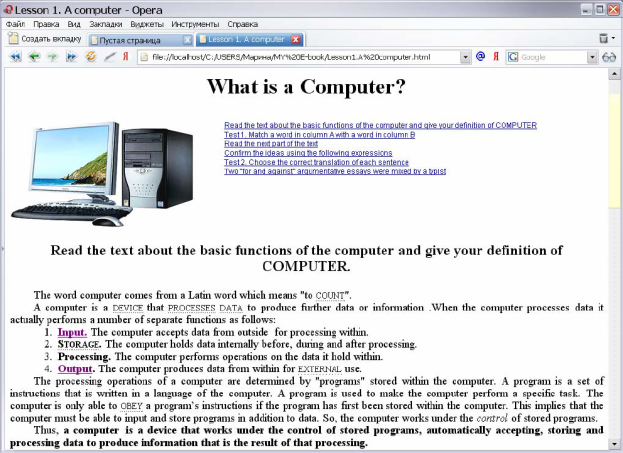

Evaluation Warning: The document was created with Spire.Doc for .NET.
МИНОБРНАУКИ РОССИИ
Федеральное государственное бюджетное образовательное учреждение
высшего образования
«САРАТОВСКИЙ НАЦИОНАЛЬНЫЙ
ИССЛЕДОВАТЕЛЬСКИЙ ГОСУДАРСТВЕННЫЙ УНИВЕРСИТЕТ ИМЕНИ Н.Г. ЧЕРНЫШЕВСКОГО»
УТВЕРЖДАЮ
Зав. кафедрой
Александрова Н. А.
__________________________
ОТЧЕТ О ПРАКТИКЕ
Студента 1 курса 172 группы факультета КНиИТ
Турченкова Павла Александровича
вид практики: преддипломная
кафедра: информатики и программирования
курс: 4
семестр: 8
продолжительность: 4 нед., с 30.04.2019 г. по 27.05.2019 г.
Руководитель практики: Фалькович Александр Савельевич
Профессор __________
Гипертекст в произведениях литературы для учащихся школ
Оглавление
1. Гипертекст в компьютерной среде
3. Применение гипертекста в образовании
1.1. Использование гипертекста в электронных учебниках
1.2. Использование гипертекста в учебной литературе на примере «Капитанской дочки»
Список используемой литературы
Гипертекст – это вид текста, который содержит в себе информацию или ссылку на место в произведении, на другую литературу или на какое-то событие в мире.
В компьютерной среде с гипертекстом можно взаимодействовать, то есть пользователя при нажатии на слово, помеченное, как гипертекст, переносит на другой участок документа, либо на другой документ, либо на сайт или портал.
Также стоит обратить внимание на понятие гиперссылки. Гиперссылка в гипертексте – это часть гипертекстового документа, которая ссылается на место в этом же документе, на другой файл или на сайт.
Некоторые современные теоретики гипертекста считают, что сам гипертекст существовал на протяжении всей истории литературы, то есть от Библии и до таких современных гиперроманов, как «Хазарский словарь» Милорада Павича или «Если однажды зимней ночью путник...» Итало Кальвино [1].
Целью данной работы является изучение понятия гипертекста, а также изучение технологий для разработки платформы для гипертекстовых книг для школьной программы по литературе. Для этого необходимо решить следующие задачи:
1. Найти литературу, которая соответствует заданной тематике;
2. Прочитать найденную литературу;
3. Проанализировать прочитанную литературу;
4. Выбрать язык программирования и соответствующие для него фреймворки.
Гипотеза данной работы: улучшение понимания художественных произведений по средствам внедрения гипертекста.
1. Гипертекст в компьютерной среде
Первое упоминание гипертекста в компьютерной среде было в докладе Теодора Нельсона под названием «Файловая структура для сложного, меняющегося и окончательно неопределимого» (англ. A File Structure for the Complex, The Changing, And the Indeterminate). В своей работе автор вводит понятие гипертекст для обозначения совокупности письменного или изобразительного материала, взаимосвязанного таким сложным образом, что его невозможно было бы удобно представить или отобразить на бумаге. Он может содержать резюме или карты его содержания и их взаимосвязей; он может содержать аннотации, дополнения и сноски от учёных, которые его изучили [2].
На данный момент гипертекст чаще всего можно встретить в виде специальных ссылок в электронном тексте, либо в языке гипертекстовой разметки HTML. Самым популярным примером для первого варианта являются ссылки в Windows Office Word. Ниже на рисунке представлено окно для создания подобных ссылок.

Рисунок 1 – окно создания ссылки
Самым популярным примером для второго варианта является использование тега в HTML – «a», который создаёт ссылку с помощью параметра «href». В этот параметр можно передавать значения в виде ссылки на удалённый ресурс, либо на внутренний. Ниже на рисунке представлен пример использования.

Рисунок 2 – создание гиперссылки в HTML
С помощью HTML разметки и языка программирования JavaScript можно создать гипертекст, который может запустить аудиофайл при нажатии на текст. Такой метод может понадобится, если в тексте встречается упоминание какого-либо музыкального произведения. Ниже на рисунке представлен пример внедрения подобной возможности.

Рисунок 3 – создание гипертекста с аудиофайлом в HTML
Гипертекст с точки зрения печатных изданий не отличается от гипертекста в компьютерной среде. Разница лишь в том, что в электронной версии учебника можно выделить гипертекст, а в литературе читателю самому нужно его найти.
Многие литературоведы давали определение такому понятию, как гипертекст. Ниже представлены определения, найденные в результате поиска информации про гипертекст.
В терминологии Ж. Женетта термин гипертекстуальность обозначает отношения между двумя и более текстами, при которых каждый из текстов может «отпочковываться» от исходного. При этом исходный текст предлагается называть гипотекстом, а производный от него текст – гипертекстом [3].
В словаре Руднева гипертекст – это текст, устроенный таким образом, что он превращается в систему, иерархию текстов, одновременно составляя единство и множество текстов [4].
В своей работе под названием «Изучение гипертекста и гипертекстуальности в контексте современной лингвистики» Стройков Сергей Александрович обращает внимание читателя на вклад в исследование гипертекста, сделанный Олегом Барановым в своей работе «Гипертекстовая субкультура», а точнее на классификацию, предложенную вторым. К первой категории относятся обычные линейные тексты, или одномерные тексты, оснащенные некоторым сравнительно небольшим количеством связей и ссылок. Ко второй категории – произведения с различной степенью гипертекстовой углубленности и сильно разветвленными связями, у которых, тем не менее, четко прослеживается одна важная черта, а именно наличие основного тела текста. И наконец третья категория, которую Баранов счел наиболее сложной и интересной, обязывает читателя участвовать в построении читаемого им, по сути, уже фактуального произведения, делая процесс непременно интерактивным [1][5].
Обращаясь к той же работе Стройкова, Николай Обрамович Шехтман дал следующее определение: «гипертекст – это некоторый нелинейно организованный объем политематических комментариев, интегрирующих непересекающиеся информационные ресурсы, между которыми при необходимости могут быть установлены перекрестные ссылки» [1][6].
Гипертекстом в литературе является отсылкой к другой литературе или в определённому месту, или же событию в реальной жизни. Например, в поэме Данте Алигьери «Божественная комедия» множество отсылок на историю Италии, на науку, а также на исторические личности.
Ещё одним примером служит статья Кибальника Сергея Акимовича «Гипертексты "Преступления и наказания" в русской литературе конца XIX – начала XXI веков». В своей работе автор указывает на множественные гипертексты в иных произведениях [7]. В данном случае подобные отсылки к произведению Достоевского «Преступление и наказание» могут сподвигнуть к прочтению произведения, на которое опирается автор первоначального произведения.
3. Применение гипертекста в образовании
1.1. Использование гипертекста в электронных учебниках
В ходе поиска информации по теме «гипертекст» была найдена статья М. В. Бакановой и А. Б. Баканова «Гипертекстовая технология как средство создания электронных учебников по иностранному языку» [8], которая описывает внедрение гипертекста в учебник по английскому языку для студентов-программистов. Авторы статьи критикую современные учебники по английскому языку, вследствие чего пишут о создании собственного электронного учебника «English for future programmers», используя технологию Macromedia Dreamweaver [9].
В своей статье Баканова и Баканов утверждают, что: «Электронный учебник «English for future programmers» направлен на формирование профессиональной коммуникативной компетенции будущих специалистов в области информатики и программирования в процессе обучения иностранному языку в вузе. Особенностью данного учебника является его ориентация на формирование у студентов умения строить конструкции формальных языков на основе идентичности морфологических, синтаксических, семантических конструкции английского языка и языков программирования, а также на исследование студентами лексических, синтаксических и семантических правил, используемых при составлении компьютерных кодов.».
Авторы статьи понимают для чего и где программисту требуются знания английского языка, поэтому они пишут, что: «необходимо формировать и развивать профессионально-лингвистическую компетенцию, сделав акцент на изучении иностранного языка как важного инструмента написания программ и средства быстрой адаптации и внедрения программных продуктов.».
Результат их работы над собственным электронным учебником представлен в виде отдельных HTML-страниц, которые снабжены ссылками на иные ресурсы, отражающие необходимые темы дисциплин. Пример работы представлен ниже.

Рисунок 4 - результат работы с Macromedia Dreamweaver
1.2. Использование гипертекста в учебной литературе на примере «Капитанской дочки»
Как было описано в главе «Гипертекст в литературе», сами гипертексты могут быть ссылками к другим произведениям, к истории, к науке и так далее. Можно с уверенность сказать, что некоторые отсылки достаточно легко заметить, и даже начинающий читатель обратит на них внимание. Но не стоит забывать, что существуют скрытые ссылки, которые даже читатель с огромным багажом знаний не сразу сможет найти в тексте.
Для того, чтобы читатель понял, что имел автор в своём произведении, гипертекст может послужить хорошим подспорьем. С помощью гипертекста человек, который создаёт его, будет выступать в роли соавтора произведения. Таким образом можно донести сакральный смысл произведения, который вложил автор.
Если человек решится стать соавтором произведения и дополнять его гипертекстом, то ему следует подумать о том, что он будет писать. Дополняя текст гипертекстом, соавтор рискует направить мысль человека не в то направление, дать неверную информацию или же вообще сбить с мысли. Например, выражение «Главною его слабостию была страсть к прекрасному полу; нередко за свои нежности получал он толчки, от которых охал по целым суткам.» из «Капитанской дочки» [10]. Эту фразу можно понять по-разному: либо он получал непосредственно толчки, то есть его кто-то толкал, либо влезал в драки. Подобные моменты лучше объяснять читателю, чтобы при рассуждении не было неясностей.
Также стоит обратить внимание, что ввиду смены поколения, некоторые слова и словосочетания могут стать устаревшими для произношения. Ввиду этого, значения некоторых забываются следующим поколением. Из-за подобных случаев соавтору также придётся разъяснять читателю некоторые слова и словосочетания, которые вышли из общего употребления. Например, выражение «бегать по девичьим», которое значит собирать слухи и сплетни, либо весело проводить время в компании женщин. А само слово «девичья» означает комнату в помещичьем доме для дворовых девушек, горничных.
В предыдущем примере с выражением «бегать по девичьим», помимо темы значения слов и словосочетаний, затронута тема смысла. В буквальном смысле можно понять, что кто-то бегал по комнатам, где проводят свой досуг горничные, но на самом деле имеется и другой смысл. Подобный пример доказывает то, что соавтор должен также быть осведомлён в подобных мелочах при написании гипертекста.
Если же человек не знает значение какого-либо слова, то он может обратиться к толковым словарям, поисковым системам и прочим источникам. Но в данном случае также имеются подводные камни. Стоит обратиться к тому же произведению, откуда был взят предыдущий пример – «Капитанская дочка». В данном произведении была фраза, в которой есть слово, которое читатель может неправильно истолковать: «Я жил недорослем, гоняя голубей и играя в чехарду с дворовыми мальчишками». Увидев подобное, соавтор должен хорошо подумать, что имел ввиду автор произведения. Информация, найденная в Интернете, дала следующие понятия этому слову:
1. В XVIII в. в России: молодой дворянин, не достигший совершеннолетия и не поступивший ещё на государственную службу.
2. (разг., ирон.) Глуповатый юноша-недоучка [11][12].
Остаётся только уточнить, что в данном контексте слово никак не связана с произведением Фонвизина «Недоросль» [13]. Данный пример показывает, что даже при простом объяснении слова можно ошибиться.
Так как текст в литературных произведениях может содержать гипертекст на какие-либо научные открытия или на исторические факты, то соавтору лучше всего не просто указать основные моменты, а также создать гиперсылку, которая позволит читателю более внимательно ознакомиться с событием или фактом, если его это заинтересует. Для примера снова будет приведен текст из «Капитанская дочка»: «Генерал-поручик!.. Он у меня в роте был сержантом!.. Обоих российских орденов кавалер!.. А давно ли мы…». В данном примере хотелось бы обратить внимание на «Обоих российских орденов кавалер!». Соавтор может просто сделать гипертекст, вписав в ссылку то, что в 18 веке были следующие ордена: орден святого апостола Андрея Первозванного и Святого Александра Невского. И больше не писать никакой информации. В случае, если читатель захочет узнать о этих орденах побольше, то ему придётся отложить электронный учебник и уже смотреть информацию в Интернете. Чтобы этого не было, соавтор может создать гипертекст на свой гипертекст, организуя информацию более иерархично, что является достоинством гипертекста [14].
Если соавтор старается объяснять каждое слово, то это не вредит общему содержанию текста. Но не стоит объяснять слова, которые искажены из-за того, что писались в прошлом или позапрошлом веке. Например, такие слова, как «слабостию», «по-нонешнему», «увидя» и прочие, можно назвать интуитивно-понятными словами. Подобные слова не могут сбить читателя с толку, так как они толкуются однозначно, но если использовать гипертекст, то это как раз может сбить читателя.
Список используемой литературы
1. Стройков С. А. Изучение гипертекста и гипертекстуальности в контексте современной лингвистики // Вестник ВУиТ. 2009. №2. URL: https://cyberleninka.ru/article/n/izuchenie-giperteksta-i-gipertekstualnosti-v-kontekste-sovremennoy-lingvistiki (дата обращения: 25.10.2019).
4. Руднев В.П. Словарь культуры XX века. М.: Аграф, 1997. (дата обращения: 25.10.2019).
10. Капитанская дочка [Электронный ресурс]: сайт. URL: https://royallib.com/book/pushkin_aleksandr/kapitanskaya_dochka.html (дата обращения 20.10.2019). Загл. с экрана. Яз. рус.
Сноски